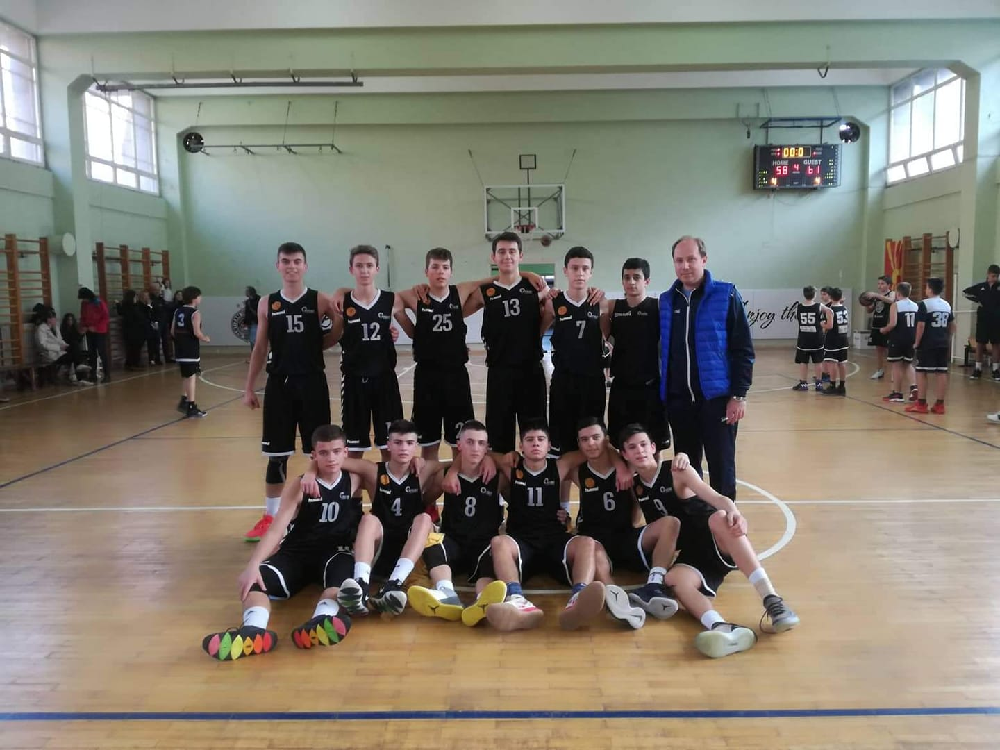
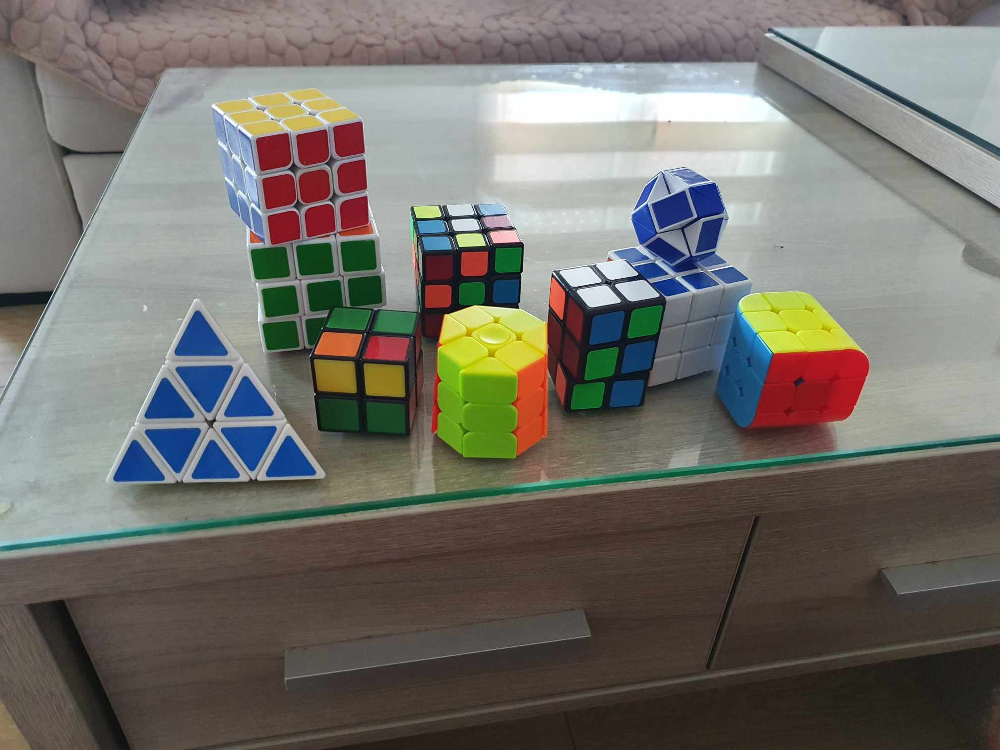

Хобија
Поради тоа што сум на факултет, главната обврска ми е учењето, ама кога имам слободно време имам и други интереси, хобиа.
Сите мои братучеди тренираа кошарка, тие ме запознаа со тој спорт, како мал цело време играв сонив, па јас исто како и нив решив да тренирам кошарка. И сега кога имам слободно време повторно одам да поиграм, се собираме на терен неколку другари и играме за забава.
Освен кошарката, исто така на рана возраст се заљубив и со сложувањето на рубикови коцки. Овие коцки ги пронајдов на Youtube, како неки луѓе многу брзо ги сложуваат и мене тоа ми стана интересно па решив и јас да ја научам да ја сложувам. Пробав и да учам некои алгоритми што ќе ми помогнат да ја сложам побрзо, но се откажав. Го знам само наједноставниот пристап на сложување и задоволен сум со тоа. Почнав и да ги собирам разновидните рубикови коцки, да си правам лична колекција.
Исто така обожавам да гледам филмови, и од оваа година почнав и да читам книги. Сега во моментот а читам „1984“ од Џорџ Орвел. Најомилениот филм ми е „The Lord of the Rings: The Return of the King“ од Питер Џексон.